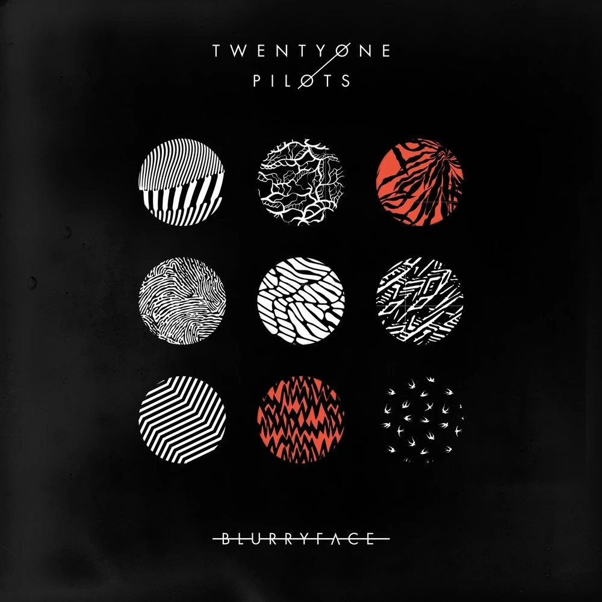

Blurryface (2015)
Tras el lanzamiento exitoso de su tercer álbum, Vessel (2013), Twenty One Pilots se embarcó en una gira mundial, llevando consigo un estudio de grabación portátil que les permitía capturar ideas creativas mientras viajaban. Esta experiencia influyó en el proceso de creación de su próximo álbum, Blurryface.
Blurryface, el cuarto álbum de estudio de la banda, se caracteriza por su concepto único centrado en un personaje ficticio del mismo nombre. Este personaje, creado por el líder de la banda Tyler Joseph, personifica las inseguridades personales y sociales, lo que se refleja en la estética dramática adoptada por Joseph durante actuaciones en vivo y videos musicales.
El lanzamiento de Blurryface en marzo de 2015 generó una gran anticipación entre los fanáticos, quienes abrumaron el sitio web de la banda al intentar reservar el álbum. Acompañado de varios sencillos exitosos, Blurryface recibió críticas positivas y alcanzó el éxito comercial, debutando en el número uno en el Billboard 200. Su recepción crítica favorable y su éxito comercial consolidaron a Twenty One Pilots como una fuerza influyente en la escena musical contemporánea.
Tracklist
- Heavydirtysoul
- Stressed Out
- Ride
- Fairly Local
- Tear in My Heart
- Lane Boy
- The Judge
- Doubt
- Polarize
- We Don't Believe What's on TV
- Message Man
- Hometown
- Not Today
- Goner